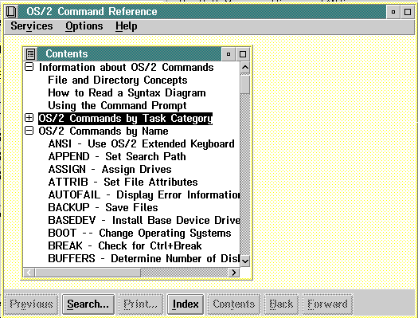

When users first select a document for viewing, IPF displays an OS/2 window that includes a table of contents (Contents window) similar to the window shown in the following figure.

A Contents Window. Users select the highlighted item and go directly to a window of text.